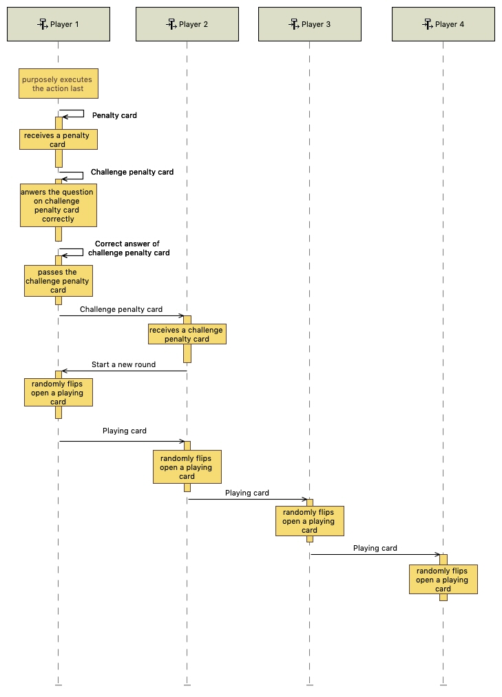
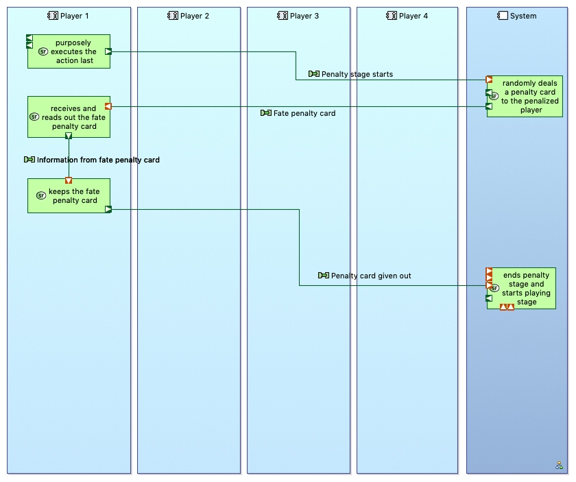

Description
One player (Player 1) knows much more about Singapore than the rest of the players. This player has thus realised that if he/ she purposely loses in the playing stage (executes the action last), he/ she can draw a penalty card, which he/ she will be able to answer and pass on to someone else. The playing stage would then resume and this cycle repeats, such that this player will have the least number of penalty cards. Thus, “non-passable” penalty cards (fate penalty cards) are introduced and dealt randomly, such that there is a possibility this “smarter” player will draw one and not be able to pass the card on.
Initial State
Players are in the midst of a playing stage. A local playing card has been flipped open and all the players have executed the action, leaving Player 1 to execute the action last.
Operational Analysis
System Analysis
